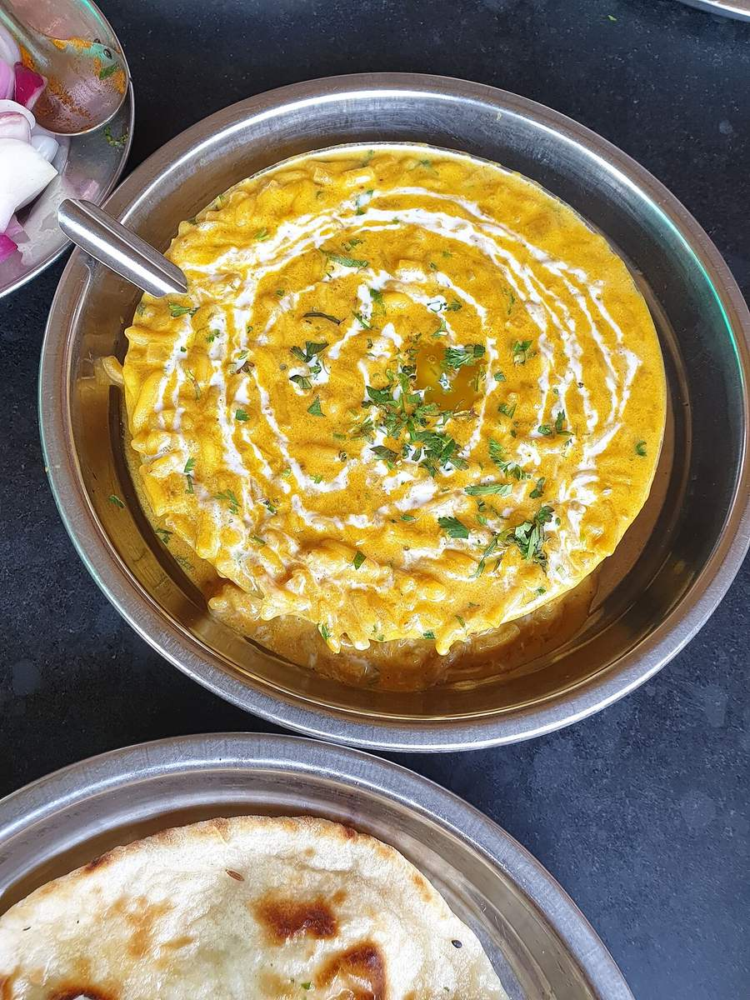

Contains: milk
Checked against the ingredient list for ten allergens: milk, egg, fish, crustaceans, tree nuts, peanuts, sesame, mustard, soy and gluten. Brands vary, so read the label on anything new to you.
Ingredients
Quantities for 4.
- 3/4 cup (150g) Toor Dal
- 1/4 cup (50g) Moong Dalyellow split moong, for creaminessoptional
- 3.5 cups Water
- 1/2 tsp Turmeric
- 2 medium (200g), chopped Tomato
- 1 small (100g), finely chopped Onion
- 1 inch, grated Ginger
- 8 cloves, sliced Garlic
- 2, slit Green Chilli
- 3 tbsp Ghee
- 1 tsp Cumin Seeds
- 3, broken Dried Red Chilli
- 1/4 tsp Asafoetidause compounded-free hing to keep this gluten-freeoptional
- 3/4 tsp Kashmiri Chilli
- 1/4 tsp Garam Masalaoptional
- 1/2, juiced Lemon
- 3 tbsp, chopped Coriander Leaves
- to taste Salt
Cookware
stovetop, pressure cooker
Before you start
- Rinse both dals in three changes of water until it runs clear. The starch on the surface makes the dal gluey and foamy.
- Soak 20 minutes while you chop; it cuts the cooking time by a third.
- Have the tempering ingredients in a small bowl beside the stove. The tadka takes 60 seconds and burns in 10.
Method
- Pressure cook the drained dals with 3.5 cups water, the turmeric, half the chopped tomato and 1/2 tsp salt for 8 minutes at full pressure.
- Let the pressure drop naturally, then whisk the dal briskly for 30 seconds until it is smooth and pourable.Whisking is what gives dal its body. Add hot water if it is thicker than double cream.
- Keep the dal on the lowest simmer while you make the tempering.
- Heat the ghee in a small pan until it shimmers, then add the cumin seeds and let them crackle and darken, about 20 seconds.
- Add the sliced garlic and fry 60 seconds until the slices are gold at the edges.Pull it off a shade early. The residual heat takes it further.
- Add the onion and fry 5 minutes until soft and browning.
- Add the ginger, green chillies, broken red chillies and asafoetida and fry 30 seconds.
- Add the remaining tomato and cook 4 minutes until it slumps and the ghee separates.
- Take the pan off the heat, stir in the kashmiri chilli, and immediately pour the whole thing over the dal.Off the heat. Chilli powder in hot ghee goes bitter almost instantly.
- Stir once, add the garam masala, lemon juice and coriander, and taste for salt.
- Cover and rest 5 minutes before serving with rice.
Storage
Keeps 3 days refrigerated. It sets solid when cold. Reheat with plenty of hot water and re-whisk, then correct the salt and lemon. Freezes 2 months.
Nutrition Medium estimate
Medium protein: 13 g a serving, 17% of the calories
| Per serving157 g | Per 100 g | |
|---|---|---|
| Calories | 296 kcal | 188 kcal |
| Protein | 12.9 g | 8 g |
| Carbohydrate | 39.6 g | 25 g |
| of which sugars | 3.6 g | 2 g |
| Fibre | 9.6 g | 6 g |
| Fat | 10.8 g | 7 g |
| of which saturated | 6.2 g | 4 g |
| of which unsaturated | 3.9 g | 2 g |
Ingredients given to taste count as zero, so the real figures run a little higher. Nearest database match used for asafoetida, garam masala. Estimated from raw ingredients using USDA FoodData Central.
Times, yields, allergens and nutrition are guidance. Use your own judgement on doneness and on storing. More in About.